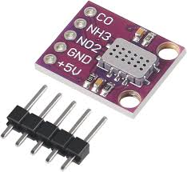
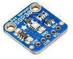

აირმზომი
ჯგუფის წევრები
- ნიკა ტვილდიანი
- მინდია წიკლაური
- უჩა ჩხიკვაძე
- ლუკა ბაუჟაძე
პროექტის მენტორები
- დავით ჩხაიძე
- გიორგი მოდებაძე

პრობლემა, რომელიც ჩვენმა გუნდმა აარჩია, არის ადამიანის უსაფრთხოება სახლის გარემოში, კერძოდ, სხვადასხვა გაზით მოწამვლის შემთხვევების თავიდან არიდებასათვის. ჩვენ მოწყობილობა მონტაჟდება სახლში და რეალურ დროში ახდენს მრავალი სხვადასხვა გაზის მონიტორინგს. ეს მოწყობილობა დაკავშირებული იქნება აპლიკაციასთან, სადაც მომხმარებელი ნახავს მის საცხოვრებელ ადგილას მიმდინარე გაზების რაოდენობას. ასევე იმ შემთხვევაში თუ რომელიმე აირის რაოდენობა გადააჭარბებს უსაფრთხოების ზღვარს,ის მომხმარებელს გაუგზავნის გამაფრთხილებელ შეტყობინებას. ამ მოწყობილობის საშუალებით შესაძლებელი იქნება მარავალი სხვადასხვა გაზებთან დაკავშირებული უბედურებების პრევენცია.
.png)
მოწყობილობა იმუშავებს იესპი32 ზე და გამოიყენებს მქტტ პროტკოლს საკომუნიაკოთ და მონაცემების გასაცვლელად, აპლიკაცია კი დაწერილი იქნება რეაქთ ნატივის ფრამვორკზე როგორც იოს ისევე ანდროიდ მოწყობილობისთვის
.png)
ჩვენი პროექტის მთავარი მიზანი იყო, გამოგვეყენებინა ესპ32 და ჩვენი სასურველი სესნორები, იმისთვის რომ ამოგვეღო ეს ინფორმაცია და შემდგომ გვეჩვენებინა ის მოწყობილობის მოხმარებლებისთვის, ამისთვის ჩვნე გამოვიყენეთ შემდეგი მოწყობილობები:
რაც შეეხება სამომავლო პერსპექტივებს, პროექტის წარმატებით წარდგენისა და ჩაბარების შემდეგ მოხდება დაკავშირება აირმზომით დაინტერესებულ ინვესტორებთან რის შემდეგაც მათთან შეთანხმებით მოხდება ამ მოწყობილობის კორპუსებში, კერძო ბინებში და ზოგადად საცხოვრებელ პუნტებში დამონტაჟება, რათა შემცირდეს და რა თქმა უნდა თავიდან აცილებული იქნეს ზემოთ ნახსენები აირით გამოწვეული საფრთხეები.
MicroController : ESP32 - ESP32-ის გამოყენება IoT-ზე დაფუძნებულ გარემოს მონიტორინგის სისტემაში რამდენიმე უპირატესობას გვთავაზობს, რაც მას პოპულარულ არჩევანს ხდის ასეთი აპლიკაციებისთვის. აქ არის რამდენიმე მიზეზი, რის გამოც კარგი იდეაა გამოვიყენოთ ESP32 ამ კონტექსტში:მარტივად გამოსაყენებელია, აქვს კომპაქტური ზომა, ჩაშენებულია Wi-Fi და Bluetooth-ი, აქვს დაბალი ენერგიის მოხმარება და არის ეკონომიურად ეფექტური
MH-Z14 NDIR CO2 sensor არის არადისპერსიული ინფრაწითელი (NDIR) ნახშირორჟანგის (CO2) სენსორი, რომელიც შექმნილია ჰაერში ნახშირორჟანგის დონის გასაზომად და მონიტორინგისთვი
Shinyei PPD42NS - dust sensor არის სენსორი, რომელიც შექმნილია ჰაერში ნაწილაკების კონცენტრაციის (PM) კონცენტრაციის გასაზომად და გამოსავლენად, კონკრეტულად ჰაერში წვრილი მტვრის და ნაწილაკების დაბინძურების მიზნით. რას აკეთებს Shinyei PPD42NS მტვრის სენსორი: ნაწილაკების გამოვლენა: Shinyei PPD42NS-ის ძირითადი ფუნქციაა ჰაერში ნაწილაკების კონცენტრაციის გამოვლენა და რაოდენობრივი განსაზღვრა.
ეს სენსორი შექმნილია გარემოში აზოტის დიოქსიდის გაზის კონცენტრაციის გამოვლენისა და მონიტორინგისთვის.სხვა სენსორებთან შედარებით, რომლებიც უმეტეს შემთხვევაში გვთავაზობენ გაზების დიდ არჩევანს, მაგრამ ნაკლებ სიზუსტეს ეს სენსორი არის კონცენტრირებული მხოლოდ რამოდენიმე გაზზე რაც მას უფრო ხელსაყრელს ხდის პროქტიში გამოსაყენებლად.
DHT22 temperature and humidity ასევე ცნობილი როგორც AM2302, არის ციფრული სენსორი, რომელიც ძირითადად გამოიყენება როგორც ტემპერატურის, ასევე ტენიანობის დონის გასაზომად გარემომცველ გარემოში. მას შეუძლია გაზომოს ტემპერატურა -40 გრადუსიდან 80 გრადუსამდე, აქვს უნარი გაზომოს ტენიანობა 0 დან 100%. არის მარტივად ინტეგრირებადი და აქვს ენერგიის მოხმარების მწირი რაოდენობა
SGP30 Gas Sensor -VOC ეს გაზის სენსორი არის ციფრული მრავალპიქსელიანი გაზის სენსორი, რომელიც შექმნილია ჰაერში აქროლადი ორგანული ნაერთების (VOCs) და სხვა გაზების კონცენტრაციის აღმოსაჩენად და გასაზომად
